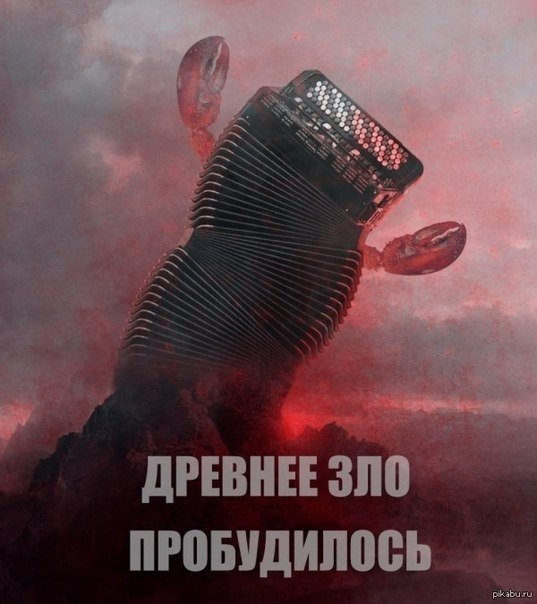

Баян - вовсе не музыкальный инструмент, как вы могли сначала подумать.
Баян - это состояние мема. Дело в том, что человеку со временем может надоесть практически что угодно - будь то любимая когда-то еда, девушка, кошка (земля ей пухом в таком случае) и даже мемасик.
По сути баяны делятся на два вида - уже создавшие мозоль в ушах и на языке мемасы и те, с которых не устаёшь проигрывать (то бишь смеяться - достаём книжечки, записываем).
Второй вид соответственно зовётся классикой и о нём подробнее будет рассказано в следующей статье. Есть ещё третий не совсем вид - древнейшие представители. Не знать эти мемы - просто моветон.

Ниже приведён список самых запомнившихся баянов - отвратительных и не очень. Удачи! Она вам пригодится.

Как вы видите, баянчики как правило представляют из себя тупую пикчу с надписью шрифтом Impact. Баянами обычно становятся раковые мемы.
Дальше
Назад
Главная